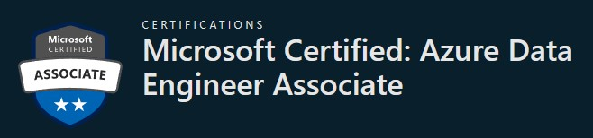

Programación 🖥 | Soluciones de Arquitectura y Nube ☁ | Seguridad 🛡
¿Qué es un perfil Data Engineer en Microsoft?
Las certificaciones de Microsoft en el rol de Data Engineer validan las habilidades y conocimientos de los profesionales especializados en la gestión, procesamiento y transformación de datos en entornos empresariales utilizando tecnologías de Microsoft como Azure y SQL Server. Estas certificaciones son fundamentales para quienes desean destacar en la gestión de datos, diseñando y manteniendo pipelines de datos eficientes y asegurando la calidad de los datos para respaldar la toma de decisiones basada en datos en las organizaciones. Son una valiosa credencial para avanzar en una carrera en el campo de la gestión de datos en el entorno empresarial actual.
¿Por dónde empezar? 🤔
Microsoft ofrece la certificación inicial Microsoft Certified: Azure Data Engineer Associate. Con esta certificación, estarás capacitado para ayudar a las partes interesadas a comprender los datos mediante la exploración, y crear y mantener canalizaciones de procesamiento de datos seguras y conformes mediante el uso de diferentes herramientas y técnicas. Utiliza varios servicios y marcos de datos de Azure para almacenar y producir conjuntos de datos limpios y mejorados para el análisis. Este almacén de datos puede diseñarse con diferentes patrones de arquitectura basados en los requisitos empresariales, entre los que se incluyen:
- Almacén de datos moderno (MDW)
- Big data
- Arquitectura Lakehouse
Si quieres saber más información acerca de esta certificación dale clic en la imagen 👇
Módulo: Lenguaje de Marcas - Ciclo Formativo: DAW Desarrollo de Aplicaciones Web Desarrollado por: Rafael Armas - Actividad 1 Módulo 1